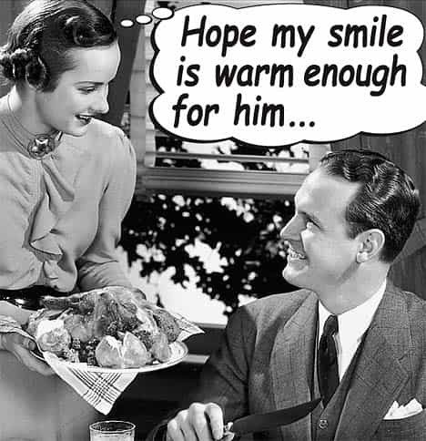

< < < Back
My Grandmother, The Dodo – Return Of Kings
A few nights every month, I have the pleasure of experiencing something that would either require a time machine in modern day America, or a plane ticket and a passport. This magical event happens right in the heart of Los Angeles where all the negatives of today’s western women run rampant. I am speaking about dinner at my grandmother’s house.
My grandmother is the antithesis of what our feminist foes want every girl to be. She goes to the gym every day, despite being 70+ years old. She cooks massive delicious meals every time from scratch, feeding everyone in the family with plenty of leftovers. She cleans, takes care of her husband and never complains. She is what used to be the epitome of a housewife.

So what effect does this have? Let’s take a few examples:
Grandfather:
He works everyday from 8am-6pm and comes home tired to his wife. But given her traditional ways, he absolutely and utterly loves her. He brings her flowers from time to time, and grandmother is genuinely excited every time. He tells her he loves her. There is no “beta” here, because this is the true nature of man and woman, the former the provider of security and the latter the provider of family. Traditional gender roles foster actual love.
The Female Offspring:
After every one of these dinners, my grandmother, her daughters and her daughters’ daughters all get up and clean the table and do the dishes. The men go sit in the living room, have a drink and watch TV. My cousin, 24, knows how to actually make food and bake incredible desserts. Her Iphone wallpaper is that of a cow saying “moo” to remind her not to overeat. She despises men that want to know what her education and vocation are. She hates feminism. She seeks to be like her grandmother.
The Male Offspring:
This includes myself and it should come as no surprise, we all fucking love these dinners. How can we not? Get fed and treated like kings. In turn, we’d do anything for grandma.
Good News / Bad News
The good news is there are pockets of women like this that still exist in America — trained and influenced by an earlier generation of women that have resisted the feminist movement and all the ill effects of westernization. The bad news is they are hard to find. Most are not even American, but immigrants from a different culture that can still shape the younger generation females in their group. And even if you do find them, they are sometimes hard to crack.
When I am at these dinners despite the fantastic satiety I inevitably feel I do get sad. I think about how this is very unlikely to happen for me in America. I start wondering if these brainwashed girls here realize that they are sacrificing their true happiness for some fabricated ideal of the independent female. But most of all I feel bad for any son I may eventually have — as by the time he will be dating, even these smaller sects of non-corrupted females will have died out and eventually become like the dodo…extinct.
Read Next: American Women Simply Can’t Compete